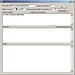
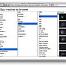
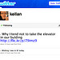
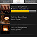

App GardenCréer une application Documentation API Fils Qu'est-ce que App Garden ? |
Ici, vous trouverez des applications faites maison créées par des membres de Flickr (comme vous !) à l’aide de l'API de Flickr.
Le jardin continue à fleurir, donc lancez-vous et parcourez les applications !
Nos applications sélectionnées
ActualiserGalleryr Pro - iPad App
"Galleryr Pro - almost certainly the best Flickr photo app in the world". Explore over 6 billion photos and videos on Flickr with...
-
 Flickr Chatterboxde straup
Flickr Chatterboxde straup -
 Mobile Fotosde avon11
Mobile Fotosde avon11 -  Comment Group...de DrewMyers
-
 Utata for iPhone...de dopiaza
Utata for iPhone...de dopiaza -
 ImageCodr.orgde TeX HeX
ImageCodr.orgde TeX HeX -
 Jigsawedde ianlevesque
Jigsawedde ianlevesque -  Flickr Machine...de blech
-  Flickr 2 Twitterde kellan
-
 PHP Gallery for...de janten
PHP Gallery for...de janten -
 John's Background...de John Conners
John's Background...de John Conners -
 Flickrfoxde Phil McCluskey
Flickrfoxde Phil McCluskey -
 Utatade dopiaza
Utatade dopiaza -
 Find Contacts in...de DrewMyers
Find Contacts in...de DrewMyers -
 iMapFlickr.comde Frame Digital
iMapFlickr.comde Frame Digital -  Upload2Flickrde Upload2Flickr
- Flickriverde iosart